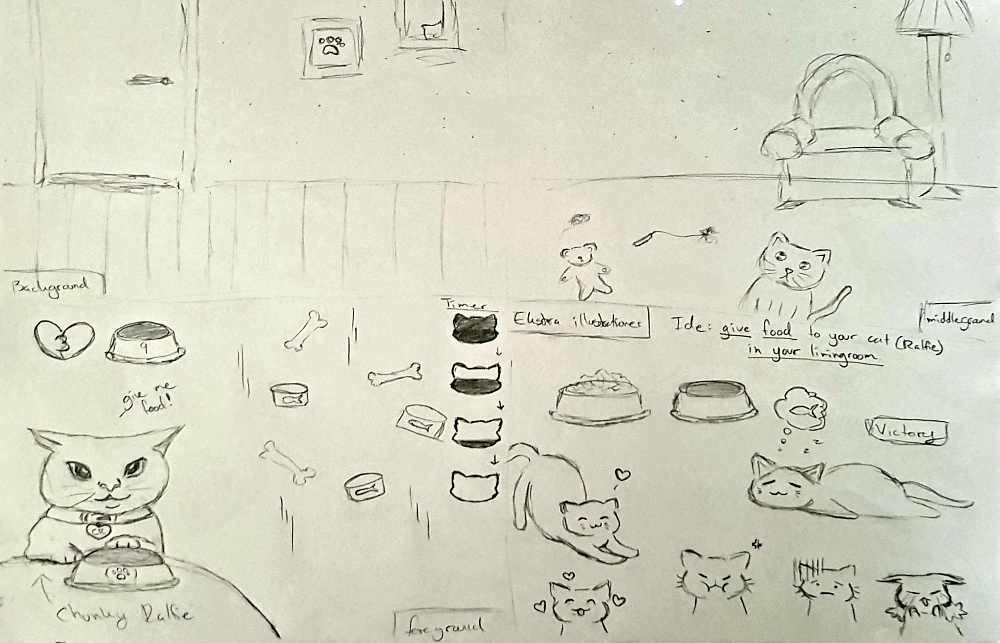
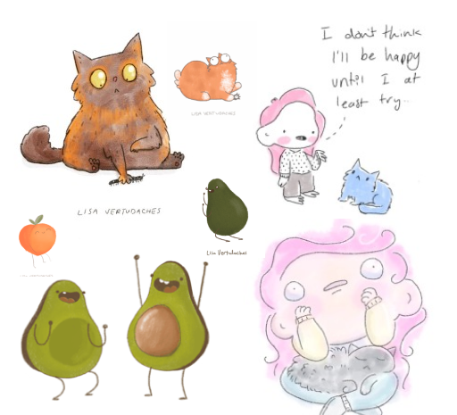
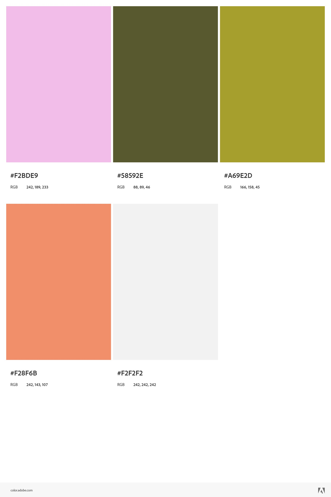

Min designproces
Ideudvikling
Jeg valgte at lave et katte-spil, siden jeg i sidste emne (UX/UI) lavede en katte-hjemmeside. Så tænkte jeg, hvorfor ikke fortsætte på den samme form for tema: katten. Navnet på spillet: Hungry-Chunky Ralfie, kommer fra ideen om en "chunky" kat. Samt' gav det en nem idé til mit spil koncept, hvor man skal fodre katten med mad. Som sagt, handler spillet om; at man skal fodre katten, Ralfie. Den er meget sulten og har brug for mad så hurtigt som muligt. Ellers bliver den hangry, for den gider ikke at vente længe. Den skal have sin yndlingsret: tun på dåse. Men man skal passe på! Ens madrester (kødben) er iblandt.
Inspiration
Jeg fik inspiration fra min egen hjemmmeside og Lisa Vertudaches illustrationer. Her er f.eks. mit moodboard, hvilket er også mit "stil-udgangspunkt".
Fra mit moodboard, fik jeg også lavet min farvepalet. Der arbejdes derfor med den simple men stadig udtryksfulde tegnestil. Samt’ med lyse farverige palet og "baby bias"-ansigter.
Papirs-prototyper/ skitser
Her er mine skitser/prototyper til mit spil.